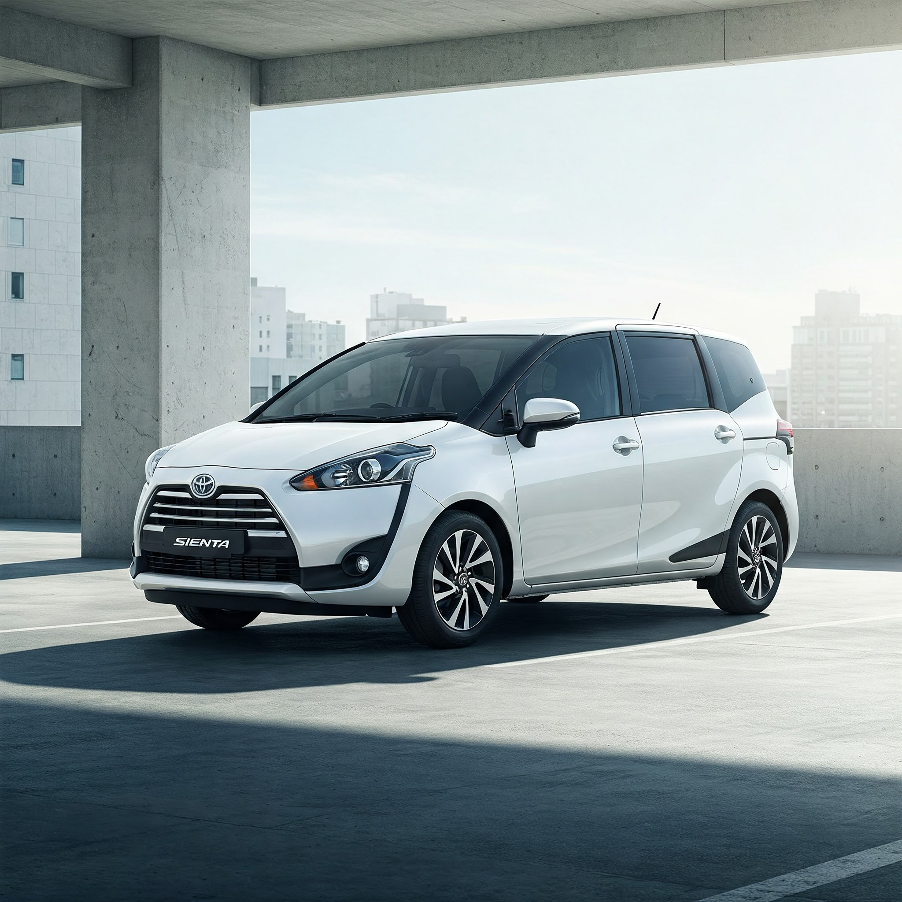
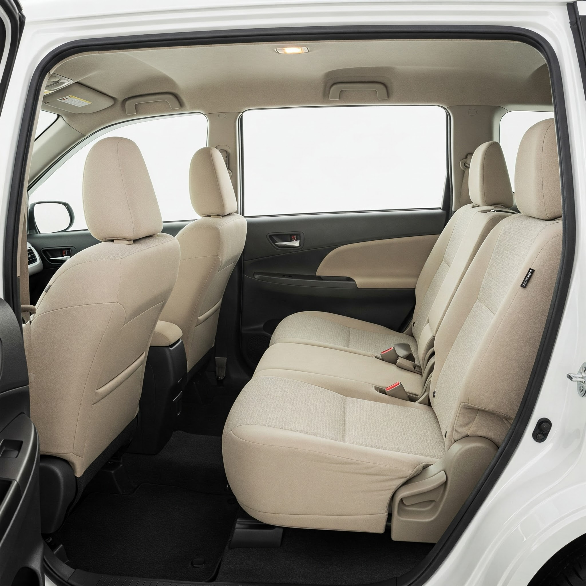

[車型一 例如：舒適轎旅車 Toyota Sienta 或類似車款]
建議載客數： 1 - 4 人
行李容量： 約 2-3 件中型行李
特色：
- 車內空間寬敞，適合小家庭或朋友出遊。
- 油耗表現佳，兼顧環保與成本。
- [可加入其他特色，例如：滑門方便上下車]
- 定期清潔消毒，保持清新。
安全保障： 配備基本安全氣囊、ABS，並定期進行專業保養檢查，投保高額乘客責任險。
我們深知旅途的舒適與安全至關重要。我們提供以下經過精心維護、乾淨整潔的車輛供您選擇。
建議載客數： 1 - 4 人
行李容量： 約 2-3 件中型行李
特色：
安全保障： 配備基本安全氣囊、ABS，並定期進行專業保養檢查，投保高額乘客責任險。
建議載客數： 1 - 7/8 人 (視座椅配置)
行李容量： 約 5-8 件中大型行李 (視載客人數調整)
特色：
安全保障： 高規格安全配備，定期原廠等級保養，投保最高額度乘客責任險，確保您的旅途安心無虞。
我們會根據您的預訂人數和行李數量，安排最適合的車輛。若您有指定車型的需求，請在預訂時告知。